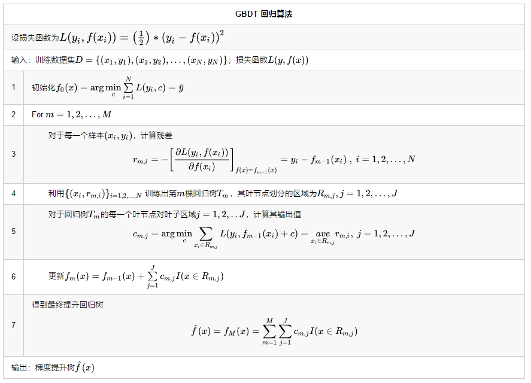
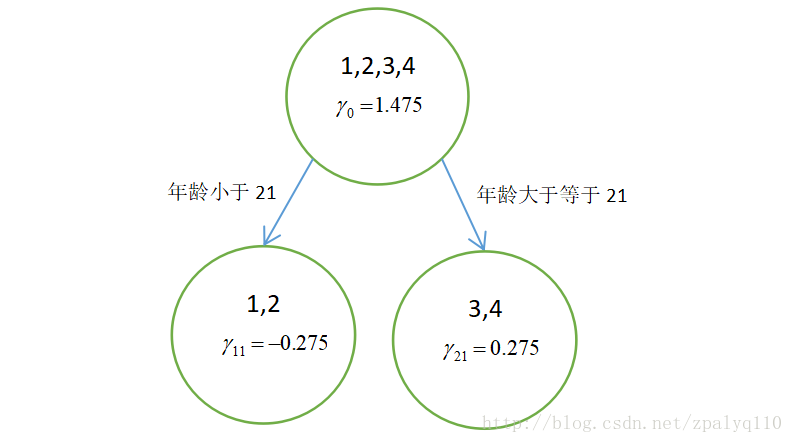

title: GBDT
date: 2017-10-20 15:50:16
tags: [模型,树模型,集成学习]
categories:
GBDT也是集成学习Boosting家族的成员,由梯度提升方法与回归树结合而成。
分类|损失函数
回归|$(y-\hat y)^2$
分类|$p_K log_2 \; p_K$
回归树生成算法
提升树可以表示为以下形式：这里我们约定 $T(x;Θ_m)$ 表示第 $m$ 棵决策树；$Θ_m$表示决策树的参数；$M$ 为树的个数。强分类器 $f_M(x)$ 可以由多个弱分类器 $T(x;Θ_m)$ 线性相加而成
提升树的前向分步算法。第$m$步的模型可以写成
然后得到损失函数
迭代的目的是构建 $T(x;Θ_m)$，使得本轮损失 $L(f_m(x),y)$ 最小。思想其实并不复杂，但是问题也很明显，对于不同的任务会有不同的损失函数，当损失函数是平方损失和指数损失函数时，每一步的优化还是简单的。但是对于一般损失函数而言，每一步的优化并不容易

采用泰勒展开式将上式中的残差展开，
一元函数在点$x_k$处的泰勒展开式为：
梯度提升思想正是为了解决上面的问题。它的主要思想是先求$h_m$，再求$β_m$。观察式子
我们要最小化的式子由N部分相加而成，如果能够最小化每一部分，自然也就最小化了整个式子。考察其中任一部分，并将其进行泰勒一阶展开
由于需要
由于$β$是大于0的，则
这说明，我们已经成功地降低了在第$i$个样本点上的预测损失。同理，我们可以降低在每一个样本点上的预测损失。条件就是
这个条件其实告诉了我们如何去寻找基学习器$h_m$，用回归树拟合$h_m(x_i)$。我们已经有了$h_m$，下面优化求解$β$，很显然，这是一个一维搜索问题，如下：
在上面的泰勒一阶展开时，有一个条件就是$βh_m(x_i)$要足够小，显然，执行一维搜索后得到的β会满足这个条件

以上算法将回归树和提升树的算法结合起来，在第5步中求解 $c_{m,j}$ ，如果损失函数为平方损失函数，则解法与前面的回归树一致，直接取均值即可。如果是其他损失函数，则需要具体进行求解。具体而言，就是取导数为零来解等式

| 编号 | 年龄(岁) | 体重（kg） | 身高(m)(标签值) |
|---|---|---|---|
| 1 | 5 | 20 | 1.1 |
| 2 | 7 | 30 | 1.3 |
| 3 | 21 | 70 | 1.7 |
| 4 | 30 | 60 | 1.8 |
| 5(要预测的) | 25 | 65 | ？ |
设损失函数为平方差函数
由于此时只有根结点，样本１,２，３,４都在根结点，此时要找到使得平方损失函数最小的参数$c$，怎么求呢？平方损失显然是一个凸函数，直接求导，倒数等于零，得到$c$。
令$\sum _{i=1}^N (c-y_i)=0$，得$c=\overline{y}$。
所以初始化时，$c$取值为所有训练样本标签值的均值。$c=(1.1+1.3+1.7+1.8)/4=1.475$，此时得到初始学习器 $f_0(x)$。
计算负梯度——残差
说白了，就是残差（上面已经解释过了），在此例中，残差在下表列出：
| 编号 | 年龄(岁) | 体重（kg） | 身高(m)(标签值) | $f_0(x)$ | 残差 |
|---|---|---|---|---|---|
| 1 | 5 | 20 | 1.1 | 1.475 | -0.375 |
| 2 | 7 | 30 | 1.3 | 1.475 | -0.175 |
| 3 | 21 | 70 | 1.7 | 1.475 | 0.225 |
| 4 | 30 | 60 | 1.8 | 1.475 | 0.325 |
此时将残差作为样本的目标值训练$f_1(x)$，寻找回归树的最佳划分结点，遍历每个特征的每个可能取值。从年龄特征的5开始，到体重特征的70结束，分别计算方差，找到使损失函数最小的那个划分结点即为最佳划分结点。例如：以年龄7为划分结点，将小于7的样本划分为一类，大于等于7的样本划分为另一类。样本1为一组，样本2，3，4为一组，两组的方差分别为0，0.047，两组方差之和为0.047。所有可能划分情况如下表所示
| 划分点 | 小于划分点的样本 | 大于等于划分点的样本 | 总方差 |
|---|---|---|---|
| 年龄5 | / | 1，2，3，4 | 0.082 |
| 年龄7 | 1 | 2，3，4 | 0.047 |
| 年龄21 | 1，2 | 3，4 | 0.0125 |
| 年龄30 | 1，2，3 | 4 | 0.062 |
| 体重20 | / | 1，2，3，4 | 0.082 |
| 体重30 | 1 | 2，3，4 | 0.047 |
| 体重60 | 1，2 | 3，4 | 0.0125 |
| 体重70 | 1，2，4 | 3 | 0.0867 |
以上划分点的损失函数最小为0.0125，有两个划分点分别为年龄21和体重60，所以随机选一个作为划分点，这里我们选年龄21。
此时还需要做一件事情，给这两个叶子结点分别赋一个参数，来拟合残差。
这里其实和上面初始化学习器是一个道理，平方损失，求导，
令导数等于零$\sum _{i=1}^N (c-y_i+f_0(x_i))=0$化简之后得到每个叶子结点的参数$c$，其实就是标签值的均值$c=\overline{y_i-f_0(x_i)}$。
根据上述划分结点：
此时可更新强学习器
循环迭代$M$次，$M$是人为控制的参数，迭代结束生成M棵树
为了方别展示和理解，我们假设$Ｍ＝１$，根据上述结果得到强学习器：

对于二元GBDT，如果用类似于逻辑回归的对数似然损失函数，则损失函数为：
其中$\large p=\frac{1}{1+e^{f(x)}}$

| $x_i$ | 1 | 2 | 3 | 4 | 5 | 6 | 7 | 8 | 9 | 10 |
|---|---|---|---|---|---|---|---|---|---|---|
| $y_i$ | 0 | 0 | 0 | 1 | 1 | 0 | 0 | 0 | 1 | 1 |
| $x_i$ | 1 | 2 | 3 | 4 | 5 | 6 | 7 | 8 | 9 | 10 |
|---|---|---|---|---|---|---|---|---|---|---|
| $r_{1,i}$ | -0.4 | -0.4 | -0.4 | 0.6 | 0.6 | -0.4 | -0.4 | -0.4 | 0.6 | 0.6 |
接着，我们需要以$r_{1,i}$为目标，拟合一颗树。
| 划分点 | 小于等于划分点的样本 | 大于划分点的样本 | 总方差 |
|---|---|---|---|
| 1 | 1 | 2，3，4，5，6，7，8，9，10 | 0.2469 |
| 2 | 1，2 | 3，4，5，6，7，8，9，10 | 0.25 |
| 3 | 1，2，3 | 4，5，6，7，8，9，10 | 0.2449 |
| 4 | 1，2，3，4 | 5，6，7，8，9，10 | 0.4375 |
| 5 | 1，2，3，4，5 | 6，7，8，9，10 | 0.48 |
| 6 | 1，2，3，4，5，6 | 7，8，9，10 | 0.4722 |
| 7 | 1，2，3，4，5，6，7 | 8，9，10 | 0.4263 |
| 8 | 1，2，3，4，5，6，7，8 | 9，10 | 0.1875 |
| 9 | 1，2，3，4，5，6，7，8，9 | 10 | 0.2222 |
| 10 | 1，2，3，4，5，6，7，8，9，10 | \ | 0.24 |
由此可知当切分点为8时，总方差最小。所以$R_{11}:x_i\leqslant 8,R_{11}:x_i> 8$
| $x_i$ | 1 | 2 | 3 | 4 | 5 | 6 | 7 | 8 | 9 | 10 |
|---|---|---|---|---|---|---|---|---|---|---|
| $f_{1,i}(x_i)$ | -1.0304 | -1.0304 | -1.0304 | -1.0304 | -1.0304 | -1.0304 | -1.0304 | -1.0304 | 2.0946 | 2.0946 |
其残差为
| $x_i$ | 1 | 2 | 3 | 4 | 5 | 6 | 7 | 8 | 9 | 10 |
|---|---|---|---|---|---|---|---|---|---|---|
| $f_{1,i}(x_i)$ | -0.3569 | -0.3569 | -0.3569 | 0.6431 | 0.6431 | -0.3569 | -0.3569 | -0.3569 | -7.1222 | -7.1222 |
继续拟合第二可数
一共拟合$M$棵树

| $x_i$ | 6 | 12 | 14 | 18 | 20 | 65 | 31 | 40 | 1 | 2 | 100 | 101 | 65 | 54 |
|---|---|---|---|---|---|---|---|---|---|---|---|---|---|---|
| $y_i$ | 0 | 0 | 0 | 0 | 0 | 1 | 1 | 1 | 1 | 1 | 2 | 2 | 2 | 2 |
| $y_{i,0}$ | 1 | 1 | 1 | 1 | 1 | 0 | 0 | 0 | 0 | 0 | 0 | 0 | 0 | 0 |
| $y_{i,1}$ | 0 | 0 | 0 | 0 | 0 | 1 | 1 | 1 | 1 | 1 | 0 | 0 | 0 | 0 |
| $y_{i,2}$ | 0 | 0 | 0 | 0 | 0 | 0 | 0 | 0 | 0 | 0 | 1 | 1 | 1 | 1 |
首先进行初始化$f_{k0}(x_i)=0$，对所有的样本
| $x_i$ | 6 | 12 | 14 | 18 | 20 | 65 | 31 | 40 | 1 | 2 | 100 | 101 | 65 | 54 |
|---|---|---|---|---|---|---|---|---|---|---|---|---|---|---|
| $y_{i,0}$ | 1 | 1 | 1 | 1 | 1 | 0 | 0 | 0 | 0 | 0 | 0 | 0 | 0 | 0 |
| $p_{0,0}$ | 0.3333 | 0.3333 | 0.3333 | 0.3333 | 0.3333 | 0.3333 | 0.3333 | 0.3333 | 0.3333 | 0.3333 | 0.3333 | 0.3333 | 0.3333 | 0.3333 |
| $r_{1,i,0}$ | 0.6667 | 0.6667 | 0.6667 | 0.6667 | 0.6667 | -0.3333 | -0.3333 | -0.3333 | -0.3333 | -0.3333 | -0.3333 | -0.3333 | -0.3333 | -0.3333 |
| 划分点 | 小于等于划分点的样本 | 大于划分点的样本 | 总方差 |
|---|---|---|---|
| 1 | 1 | 2，6，12，14，18，20，31，40，54，65，65，100，101 | 1.0036 |
| 2 | 1，2 | 6，12，14，18，20，31，40，54，65，65，100，101 | 0.5063 |
| 6 | 1，2，6 | 12，14，18，20，31，40，54，65，65，100，101 | 0.5149 |
| 12 | 1，2，6，12 | 14，18，20，31，40，54，65，65，100，101 | 0.5222 |
| 14 | 1，2，6，12，14 | 18，20，31，40，54，65，65，100，101 | 0.5270 |
| 18 | 1，2，6，12，14，18 | 20，31，40，54，65，65，100，101 | 0.5270 |
| 20 | 1，2，6，12，14，18，20 | 31，40，54，65，65，100，101 | 0.5175 |
| 31 | 1，2，6，12，14，18，20，31 | 40，54，65，65，100，101 | 0.4879 |
| 40 | 1，2，6，12，14，18，20，31，40 | 54，65，65，100，101 | 0.5163 |
| 54 | 1，2，6，12，14，18，20，31，40，54 | 65，65，100，101 | 0.9012 |
| 65 | 1，2，6，12，14，18，20，31，40，54，65，65 | 100，101 | 1.060 |
| 100 | 1，14，18，20，31，40，54，65，65，100 | 101 | 0.5045 |
| 101 | 1，2，6，12，14，18，20，31，40，54，65，65，100，101 | \ | 0.5149 |
| $x_i$ | 6 | 12 | 14 | 18 | 20 | 65 | 31 | 40 | 1 | 2 | 100 | 101 | 65 | 54 |
|---|---|---|---|---|---|---|---|---|---|---|---|---|---|---|
| $f_{m,k}(x_i)=f_{1,0}(x_i)$ | 1.1428 | 1.1428 | 1.1428 | 1.1428 | 1.1428 | -0.999 | -0.999 | -0.999 | 1.1428 | 1.1428 | -0.999 | -0.999 | -0.999 | -0.999 |
| $x_i$ | 6 | 12 | 14 | 18 | 20 | 65 | 31 | 40 | 1 | 2 | 100 | 101 | 65 | 54 |
|---|---|---|---|---|---|---|---|---|---|---|---|---|---|---|
| $y_{i,1}$ | 0 | 0 | 0 | 0 | 0 | 1 | 1 | 1 | 1 | 1 | 0 | 0 | 0 | 0 |
| $p_{0,1}$ | 0.3333 | 0.3333 | 0.3333 | 0.3333 | 0.3333 | 0.3333 | 0.3333 | 0.3333 | 0.3333 | 0.3333 | 0.3333 | 0.3333 | 0.3333 | 0.3333 |
| $r_{1,i,1}$ | -0.3333 | -0.3333 | -0.3333 | -0.3333 | -0.3333 | 0.6667 | 0.6667 | 0.6667 | 0.6667 | 0.6667 | -0.3333 | -0.3333 | -0.3333 | -0.3333 |
以$r_{1,i,1}$拟合一颗回归树，（以6为分裂点）,可计算得到叶子结点
| $x_i$ | 6 | 12 | 14 | 18 | 20 | 65 | 31 | 40 | 1 | 2 | 100 | 101 | 65 | 54 |
|---|---|---|---|---|---|---|---|---|---|---|---|---|---|---|
| $f_{m,k}(x_i)=f_{1,1}(x_i)$ | -0.2499 | -0.2499 | -0.2499 | -0.2499 | -0.2499 | -0.2499 | -0.2499 | -0.2499 | 2 | 2 | -0.2499 | -0.2499 | -0.2499 | -0.2499 |
然后再拟合第三个类别（类别2）的第一颗树，过程也是重复上述步骤，所以这里就不再重复了。在拟合完所有类别的第一颗树后就开始拟合第二颗树。反复进行，直到训练了$M$轮。